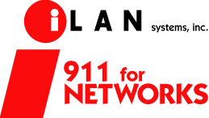

- management -
Whether you are actively searching for the right property management software, or just browsing the Web, we invite you to learn more about our products and the services that we provide. . Rental Network Software is the technological leader in the Property Management Software arena. We are committed to integrity, dedicated to complete customer satisfaction, and driven to provide the state of the art technology that will help our clients excel. In both the Rental Management and Timeshare Management arena, we offer modern and efficient applications to assist management companies attain the ultimate goal of full automation.
|
The new ITIL series will be available in April 2002. . Software Management Network RESOURCES FOR SOFTWARE MANAGEMENT AND SOFTWARE MAINTENANCE Software Management Network provides the resources to manage, control, and enhance existing applications. Use this site to order ITIL (Information Technology Infrastructure Library), the comprehensive and systematic presentation of best practices in information technology management. Access skills, experience, and technology delivered to managers and software groups responsible for installed software.
Sentry units also provide console port access to remote servers and network equipment. .com remote power management reboot remote equipment and console port access with server technology and sentry Server Technology designs and manufactures Sentry Remote Power Management products that combine Intelligent Power Distribution, Power Measurement and Remote Power Management into a single solution. Measurement features include monitoring the current draw (amperage) of each device in a remote relay rack or equipment cabinet, voltage availability and the temperature in remote sites. Sentry units also provide console port access to remote servers and network equipment.
 |
open(URLtoOpen, windowName, windowFeatures); newWindow. We'll show you what's now possible with this studio, and how to plan, build and produce with this powerful new suite of programs. is an innovative web application development and consulting firm that has used ColdFusion to deliver enterprise-level content management solutions for major organizations. They are currently rewriting their flagship product, the Webworld Content Manager, to take advantage of Macromedia MX technologies. Use of this website signifies your agreement to the Terms of Use.
|  |
read more at: http://www.acezones.com/management/index.html
.